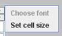

Entering words into your dictionary
After you finish adding the languages that will be part of your dictionary, you will see them appear as icons at the bottom of the WOLF application frame. A sample is shown in the picture above. That picture represents a dictionary with four languages, Chinook, Nezperce, Tolowa, and English. The picture shows Chinook (ISO code chh) as gloss, and English (eng) and Nezperce (nez) cross referenced. This is because Chinook has a green border, while English and Nezperce have a red border. The forth language, Tolowa (tol) is neither gloss or cross referenced. To change which language is gloss, selected or neither, simply click on the toolbar language buttons. One click will turn a language from not referenced to referenced. Another click switches it to gloss. A third click turns it back to not referenced. Words, definitions, and example cells are structured in this way.
In order to enter dictionary data, you need to have at least one gloss language. You can have as many referenced languages as you like. When you first create a dictionary, WOLF will add the first word (with a blank spelling). Note the picture above. This picture contains three lines of input. The first line is for entry of the word in the gloss language (the associated font will be used). The second line is for the translation to the first selected language (eng) and the third line is for translation to the second selected language (nez). If more languages are selected, more lines will appear. If none are selected, only the line for gloss entry will show. The square to the right is for entry of multimedia entities, which we describe on the multimedia page
Creating a WOLF Dictionary

Similar to spread sheets, a central concept to creating a dictionary in WOLF are rows and column of cells. Each word can contain a series of row and column cells. Similarly, each definition within a word can contain rows and columns of cells. The above picture shows a possible structure for a word entry. This particular word has three column cells to the right of its primary entry cell and two row cells. It also has two row cells, one for a definition and another for an example. The definition cell in turn has one column cell to the right of its main entry. The paragraphs below show how to constuct such a structure.
Adding columns to a word, definition, or subentry
If you right click (cmd-click on Macs) to the right of the word or definition entry cell, you will see a drop-down menu for adding column cells that have a particular format. The drop-down menus for this are shown in the pictures above. The left-most picture is for adding a column for an ontology entry. It shows six possible ways that the cell can be structured. Two of these allow you to type word forms corresponding to the ontological term.
The second picture shows the choices for adding a category cell. This cell allows entry of comments with the category showing as a title. The third picture shows choices for adding columns that have translations to multiple languages.
Several of the above selections anticipate the data to be dictionary words separated by commas, semicolons, or spaces. The selections with this facility include Antonyms, Compare, Lexical Function, Main Entry, Reversals, Subentry, Synonyms, References, and Thesaurus. For these, if with the alt key depressed, you click on one of the words, the dictionary view will position to display the word selected. If the word is not on file, nothing will happen, but a beep sound will be heard.
The categories, ontology, and Main Entry choices have additional built-in functionality. These are used by WOLF to respectively perform category, Main Entry, ontology-based searches. For example, a wolf might be categorized as a "mammal, animal, living thing, or four-legged." By searching for "living thing", you can find all of the words that contain that category. Main Entry searches can find words using alternate transcriptions. Ontology searches enable searching by morphological word forms,
Adding rows to a word, definition, or subentry
Reordering or deleting cells
You can control the position of a cell. If it should be in the wrong position, press the mouse on its border, drag it to the desired position and release. The arrangement will change appropriately. Should you want to remove a cell, drag it out of the WOLF screen and release the mouse. It will disappear.
Adding, removing, cutting, pasting words
Perhaps you noticed the options to insert word, remove word, cut word, or paste word on the word column and row drop-downs. These allow you to control the overall dictionary. As it implies, insert word will add a new word into the dictionary. The new word will have the same structure as the word on which you click. This saves you from having to add rows and columns. (The structure will automatically be created, though the data will be blank.) New words will insert immediately before the one on which you click. The cut and paste options enable you to remove a word from one place in the dictionary and paste it to another spot. Finally, remove word as the command implies, gets rid of a word that you no longer want in the dictionary.
Changing cell characteristics

If you right click on the edge of a cell, a different drop-down shows up. This drop-down lets you control a cell's width and possibly its font. The above picture shows this drop-down. In the picture, the choose font selection is ghosted. This is because only comment cells allow you to change the font. This is because, other cells use fonts determined by the languages in question.
By default, comment cells use the indigenous font (or if there is a colon before the first space, they use a standard system font). For example, a comment field containing the text, "Lit: It's a new year", will use the standard font.
When you click on the font size selection, you will be able to widen (or narrow) the width of the cell.Hyperlinks
WOLF supports hyperlinking to external websites in a category cell. Right click within the cell and a dialog box will appear (as shown above0. Simply enter the hyperlink. To remove a hyperlink, click cancel and the previous hyperlink will be removed. To transfer to a hyperlinked site, type ctrl enter.
Specific cell options
Entering information into most cells is simple. Simply type it in. Ontology and comment cells, however, each have an additional feature. When you add an ontology cell, the ontological term is blank. To fill it in, simply click on the cell. A dialog as shown on the left picture above will appear. Move your cursor to the correct term, click, and then select the appropriate entry. In this way, you are encouraged to make use of the GOLD ontology.
When entering comments, WOLF anticipates the case where the information is more than can fit in the cell. To accommodate, it allows you to expand the cell vertically. The center picture above shows how the cell will look when expanded. The picture on the right shows it contracted. Simply click the + to expand or on the - to contract. When expanded, the cell will overlay the rows below in the word.
Navigation controls
WOLF provides controls to easily move between word columns and rows, or to move between words. Press tab or enter to move to the next field of a word. Shift-tab or Shift-enter moves to the previous field of a word. The up-arrow and down-arrow keys move vertically within rows of a word. Page-up and Page-down moves between words in a dictionary. Of course, you can always use the scroll bar to navigate to the section of the dictionary that you want.